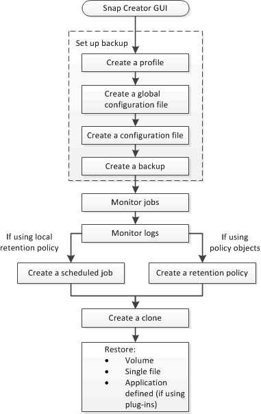

Backup and recovery workflow
Contributors
 Download PDF of this page
Download PDF of this page
You can use the workflow as a guideline for your backup and recovery process using the Snap Creator GUI.
When performing these tasks, Snap Creator must be running and the Snap Creator GUI must be open. If it is not, you can enter the URL of the Snap Creator Server in a web browser ("https://IP_address:gui_port" by default, the port is 8443), and then log in by using the Snap Creator GUI credentials.
The following illustration depicts the complete set of tasks when performing a backup and recovery of your system when using plug-ins:
| The tasks outlined in the workflow can also be performed from the command-line interface (CLI). For details about the CLI, see the related references for information about the CLI command line. |

Related information
 Edit on GitHub
Edit on GitHub